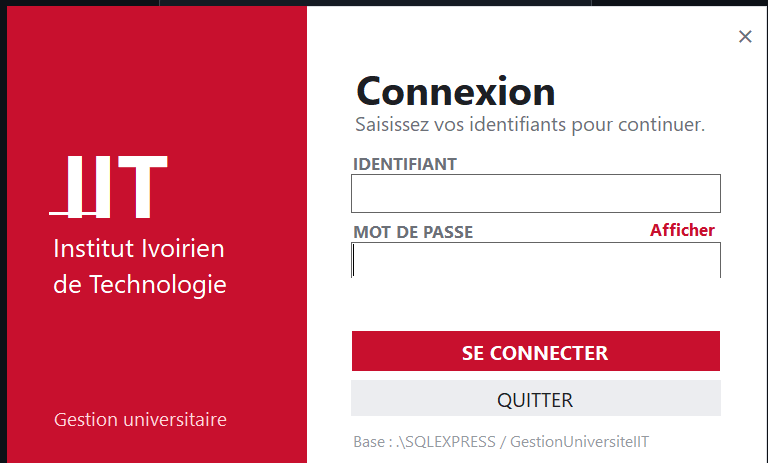

← Retour aux projets
Gestion Universitaire
Application de bureau Windows Forms qui permet de gérer une université : étudiants, enseignants, cours et notes. Les données sont stockées dans une base SQL.
Fonctionnalités
- Gestion des étudiants (ajout, modification, suppression)
- Gestion des enseignants
- Gestion des cours
- Saisie et consultation des notes
- [À COMPLÉTER : recherche, impression de relevés, connexion par mot de passe…]
Technologies
- C# avec l'interface Windows Forms
- SQL pour la base de données
- [À COMPLÉTER : SQL Server, MySQL, ou autre]
Aperçu

Contexte
Projet réalisé dans le cadre de ma Licence en Informatique. [À COMPLÉTER : année, travail seul ou en groupe, objectif du projet.]
Ce que j'ai appris
[À COMPLÉTER : par exemple la conception d'une base de données, la liaison entre une interface et une base SQL, la gestion des erreurs.]